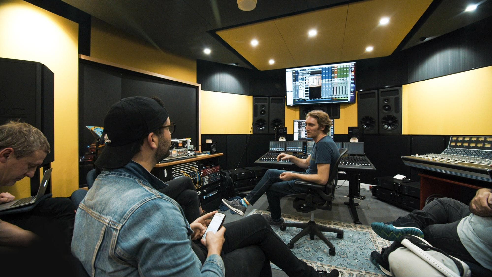
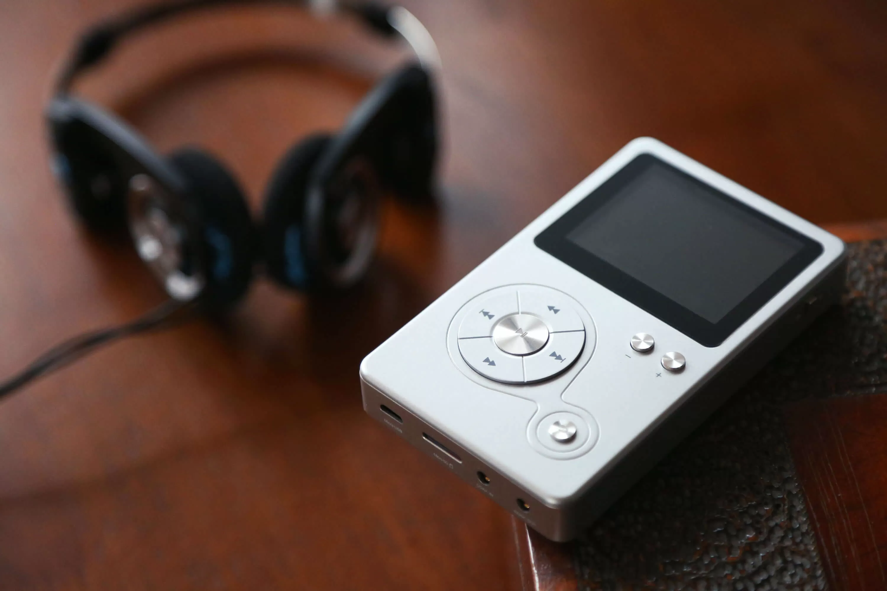
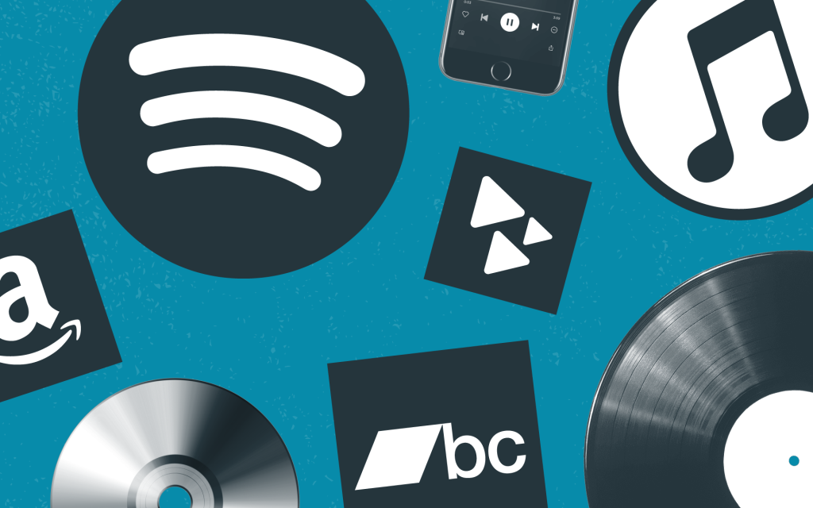

In the first decade of the 21st century, the rise of computers and high-speed internet fundamentally changed how music is recorded, distributed, and consumed, causing widespread shifts across the entire music industry.
The development of inexpensive recording hardware and sophisticated music software allowed aspiring producers to create high-quality music entirely from a bedroom and distribute it to a worldwide audience.


The era saw a massive decline in physical media (like CDs) as consumers shifted towards digital consumption, first through peer-to-peer file sharing and pocket-sized MP3 players like the iPod, followed by legal digital download storefronts like the iTunes Store.
As broadband internet became globally accepted, the modern music process evolved to rely on digital streaming and subscription-based platforms, making it easier than ever for artists to reach their listeners directly.

Even though a lot of music today involves sending files back and forth across different time zones to finish a track, the best ideas usually still happen face-to-face. A great example is APT. by Rosé and Bruno Mars. While the final song was put together by an international team of producers, the main concept came to life simply because the two artists were hanging out and playing around with ideas in the studio together.
An overview of leading Digital Audio Workstations used by modern music producers worldwide.
| Software (DAW) | Primary Workflow | Key Features | Supported OS |
|---|---|---|---|
| Ableton Live | Electronic & Live Performance | Session View, Clip Launching, Real-time Pitching | Windows, macOS |
| FL Studio | Beatmaking & Hip-Hop/EDM | Pattern Piano Roll, Step Sequencer, Lifetime Updates | Windows, macOS |
| Logic Pro | Composition & Arranging | Dolby Atmos Spatial Audio, Huge Sound Library | macOS Only |
| Pro Tools | Recording & Mixing/Mastering | Industry Standard Audio Editing, Advanced Routing | Windows, macOS |